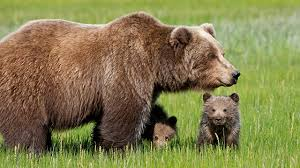

"Mazaalai"-The Gobi Bear, endangered specie
The Gobi bear (Ursus arctos gobiensis; known in Mongolian as the Mazalaai (Мазаалай), is a subspecies of the brown bear (Ursus arctos) that is found in the Gobi Desert of Mongolia. It is listed as critically endangered by the Mongolian Redbook of Endangered Species and by the Zoological Society of London. The population included only around 22 adults in 2016, and is separated by enough distance from other brown bear populations to achieve reproductive isolation.
Behavior and ecology
Gobi bears mainly eat roots, berries, and other plants, sometimes rodents; there is no evidence that they prey on large mammals. Small compared to other brown bear subspecies, adult males weigh about 96.0–138.0 kg (211.6–304.2 lb) and females about 51.0–78.0 kg (112.4–172.0 lb).
Genetic diversity
Gobi bears have very little genetic diversity, among the lowest ever observed in any subspecies of brown bear. Levels of genetic diversity similar to the Gobi bears have been reported only in a small population of brown bears in the Pyrenees Mountains on the border of Spain and France.
Research
Based on morphology, the Gobi brown bear has sometimes historically been classified as being of the same subspecies as the Tibetan blue bear. However, recent phylogenetic analysis has shown the Gobi bear to instead represent a relict population of the Himalayan brown bear. There are only 20 Gobi bears left in the wild.